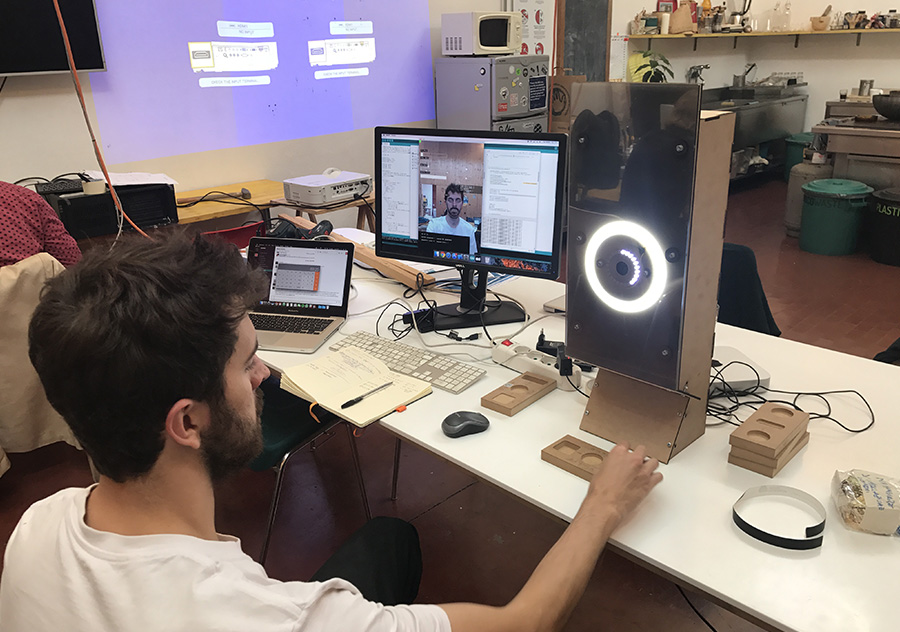
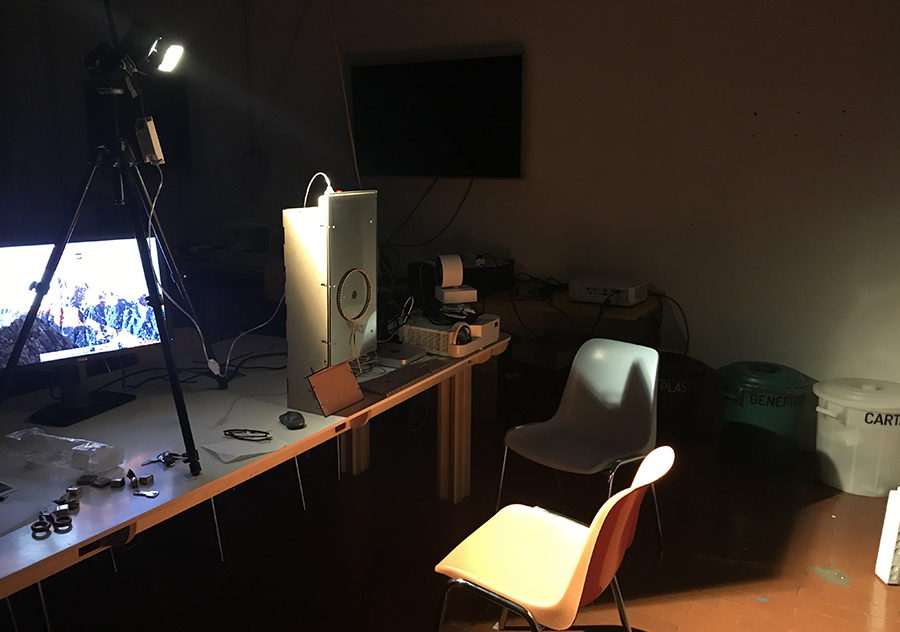

Venchi Experience
UX and prototyping
At Dotdotdot we helped CarloRattiAssociati in realizing a digitally-augmented chocolate tasting experience for Venchi. Visitors access a half-light room where a camera capture each person’s face while tasting the candies; in real-time an algorithm analyse the micro-movements of lips, eyebrows, nose and forehead guessing the satisfaction of the taster. After the tasting, the visitor access the second enclosed room where the expressions scanned in the tasting area are projected to give back to visitors all the data collected.
In order to make this possible Daniele Ciminieri, starting from the work of Kyle McDonald, trained the software for the recognition of the five Venchi selected emotions. A collaborator developed the wall visualization, where the recordings of the faces are rendered together with the processed data.
My role was of coordinator between the 2 developer, co-designer of the User experience, visual designer of the visualization and prototyper of the booth station.
